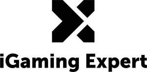
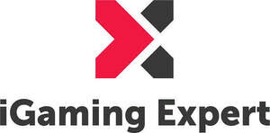

Trade Mark Journal No.2025/042 17 October 2025
UK00004225088 26 June 2025 (9,35,38,41,42,45)
Mark 1
Mark 2
Mark 3
Mark 4
Mark 5

Mark 6

- Class 9
- AI-based betting solutions; downloadable analytics software for gambling; Downloadable electronic publications, reports, white papers, and newsletters in the fields of sports betting, gaming, and business networking; mobile applications for event management, sponsorship tracking, betting analytics, and gaming compliance; software for news aggregation, affiliate marketing management, sponsorship tracking, and event coordination; digital ticketing software for event registrations and sponsorships; AI-based betting analytics and risk assessment software; blockchain solutions for brand licensing, intellectual property protection, and NFTs; payment processing software for gaming and event transactions; digital and electronic learning tools for betting, gaming, and business education; Computer software; computer software for betting, gaming and gambling services and database management; electronic publications; computer games; electronic interactive computer games; computer software and computer programs for distribution to, and for use by, users of a betting and gaming services; computer games programmes downloaded via the internet [software]; computer games software; computer programs for playing games; computer software downloaded from the internet; compact discs and DVD's; gaming apparatus adapted for use with television receivers; computer software for use in downloading, transmitting, receiving, editing, extracting, encoding, decoding, playing, storing and organising data including audio and video data; Downloadable games (software); Interactive electronic games (software); Computer software, including downloadable computer software; Business management software; Interactive business software; Computer software for business purposes; Software for the analysis of business data; Application software for social networking services via internet; Training software; Educational software; Educational mobile applications; Educational computer software; Podcasts; media content; mobile apps; Downloadable educational media; computer software for use in playing games; Games software; Gaming software, including interactive gaming; Downloadable games applications; Interactive electronic games applications; Downloadable publications; Betting terminals; Coin-operated mechanisms for vending machines; CDs, DVDs, CD-Roms; Parts and fittings for all of the aforesaid goods.
- Class 35
- Business consultancy for gaming companies; market analysis for the gambling industry; Business networking services; advertising and promotional services for gaming, sports betting, and business conferences; sponsorship consultancy and management services; affiliate marketing services and tracking platform development; ticket sales and event registration management; licensing of branding for events, promotions, and collaborations; business management and consultancy for gaming and betting operators; franchising support for gaming-related brands; business and career advice for professionals in the gaming industry; Advertising; business administration; loyalty, incentive and bonus program services; online retail services connected with the sale of downloadable games (software), interactive electronic games (software), computer software, including downloadable computer software, computer software for use in playing games, games software, gaming software, including interactive gaming, downloadable games applications, interactive electronic games applications, downloadable publications, betting terminals, coin-operated mechanisms for vending machines, CDs, DVDs, CD-Roms, paper and cardboard, printed matter, stationery and office requisites, except furniture, instructional and teaching materials, posters, promotional materials, photographs, newsletters, newspapers, tickets, tickets for payment without cash, betting slips, display banners of paper, display banners made of cardboard, advertising signs of paper, advertising signs of cardboard, printed cards, games and playthings, printed game cards, lottery scratch cards, lottery tickets, scratch cards, game cards, scratch cards for playing lottery games, electronic games, interactive electronic games, apparatus for games adapted for use with television receivers, apparatus for playing electronic games, gaming machines for gambling, arcade game machines, games involving gambling; marketing; compilation of information into computer databases; creating advertising banners for use on websites, for others; dissemination of advertising for others. .
- Class 38
- Online communication services for gaming companies; streaming of gaming-related content; Broadcasting and streaming of audio and video gaming and betting-related content; web-based news broadcasting and gaming industry analysis; podcasting and telecommunication services for webinars and online courses; monetization of video content via sponsorship and advertising; licensing content for third-party streaming platforms; Providing access to multiple user network systems allowing access to gaming and betting information and services over the Internet, other global networks or via telephony (including mobile telephones); telecommunications services; transmission of radio or television programmes; data streaming services; streaming of live television and radio; online video service, offering live streaming of cultural, entertainment and sports events; providing internet chat room services; provision of on-line forums; transmission and communication services; transmission of sound and/or pictures; computer aided transmission of messages and images; electronic mail services; telecommunication services relating to the Internet or via telephony including mobile telephones; telecommunication of information (including web pages); provision of telecommunications links to computer databases and websites on the Internet or via telephony including mobile telephones; telecommunications information; factual information services relating to telecommunications. .
- Class 41
- Online gambling training and workshops; publishing gaming industry reports; Organization of conferences, summits, and industry panels; news reporting services and research publication; betting and gaming education, including workshops, masterclasses, and live seminars; ticketed events, paid webinars, and live event broadcasting for ticket holders; online courses, tutorials, and educational programs for gaming professionals; certification programs for betting, gaming, and compliance professionals; sponsorship of educational initiatives and training programs; licensing of event content for replays and archives; Provision of betting, gambling and gaming services; betting, lottery and book making services; credit card betting, gaming, gambling, lottery or book making services; organising and conducting lotteries; electronic betting, gaming, gambling and lottery services provided by means of the Internet, or via a global computer network, or on-line from a computer network database, or via telephony including mobile telephones, or via a television channel; interactive poker, bingo and skills games and gaming including single and multi player gaming formats; presentation and production of poker and bingo competitions, tournaments, games and gaming; entertainment, sporting and cultural activities; organisation and conducting competitions; remote gaming services provided through telecommunication links; gambling information provided on-line from a computer database or via the Internet; gaming services for entertainment purposes; electronic games services provided by means of the Internet; organisation of games; game services provided on-line; services for the operation of computerised bingo and skills games; information relating to gaming provided on-line from a computer database or the Internet; information and advisory services relating to the aforesaid services; factual information services relating to sport; research and education relating to gambling; provision of information and tips relating to betting and gambling; Entertainment services and provision of leisure facilities; Organisation and presentation of gambling or gaming events, poker games, betting, pool betting, tote betting, playing games, bingo games; Education; providing of training; entertainment; sporting and cultural activities; Education information; Educational demonstrations; Educational research; Educational consultancy; Educational services; Providing of education; Education information services; Sports and fitness; sport camps; production of sports events; arranging and conducting of sports events for charitable purposes; Sports training; sports information services; e-sports services; Organisation of competitions; Organising of sports competitions; Organisation of entertainment competitions; Organising of games and competitions; Entertainment services relating to competitions; Arranging and conducting workshops; Conducting courses, seminars and workshops; Arranging and conducting of training workshops; Social club services for entertainment purposes; rental of sports equipment; Rental services relating to equipment and facilities for education, entertainment, sports and culture; Production of television programmes; Instruction via broadcasting; Non-downloadable electronic publications; Education, teaching and training relating to playing games, gambling, gaming, poker, bingo, betting, book making; Gaming, or entertainment provided online via the internet, by telephone, by radio or via a mobile communications network; Provision of betting, gambling and gaming services through physical and electronic sites; Provision of betting, gambling and playing games, including poker and bingo among others via a website; All the aforesaid services also provided on-line from a computer database, by telephony or the Internet; Providing information in the field of betting and gaming via a website; Provision of information services and advice in relation to all the aforesaid; Consultancy, advisory and information services relating to the foregoing services. .
- Class 42
- IT consultancy for gaming platforms; development of blockchain-based gambling solutions; Software development, hosting of digital content, and platform maintenance; web platforms for event management, betting analytics, and sponsorship tracking; white-label software solutions for gaming and betting operators; AI-powered risk assessment software and predictive analytics for betting; cybersecurity solutions for gaming and betting businesses; platforms for online courses, including e-learning and training portals; Computer advisory, consultancy and design services, leasing, rental and hire of computer software, computer programming; software development; Scientific and technological services and research and design relating thereto; Industrial analysis and research services; Design and development of computer hardware and software; Design and development of video game software; Design and development of computer game software; Computer software design; Computer software consultancy; Computer system analysis; Computer system design; Computer programming; Programming of betting and gaming software; Creating and maintaining websites; Hosting websites; Gaming software development; Computer services relating to betting and gaming; Providing online, non-downloadable software; Consultancy, advisory and information services relating to the foregoing services.
- Class 45
- Regulatory compliance services for gaming and betting companies; Online social networking services for the gaming and betting community; licensing of intellectual property, including event branding and sponsorships; legal consultancy for gaming and betting compliance; regulatory support for gaming operators and events; dispute resolution and mediation services for gaming sponsorships; accreditation and certification services for gaming professionals and events; Legal services; security services for the physical protection of tangible property and individuals; Internet-based social networking services; legal support services; Licensing of software; licensing services; intellectual property licensing services; provision of information, advice and consultancy in relation to security services for the protection of property and individuals; providing information on the development of privacy, security and data governance law via a web site; providing legal information from an on-line interactive database; Security services for the protection of property and individuals; reviewing standards and practices to assure compliance with laws and regulations; consultation in relation to data protection compliance; Providing clothing to needy persons (charitable services); information, advisory and consultancy services relating to the aforesaid. .
SPORTS BETTING COMMUNITY LIMITED
Representative: Josh-IP.Law